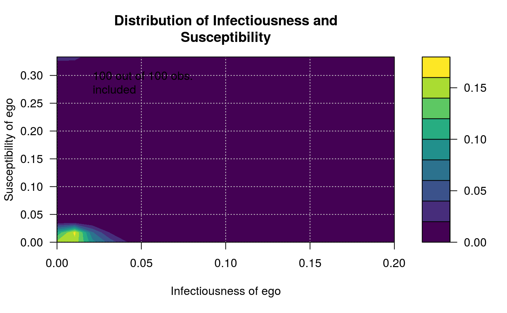

After calculating infectiousness and susceptibility of each individual on the
network, it creates an nlevels by nlevels matrix indicating the
number of individuals that lie within each cell, and draws a heatmap.
plot_infectsuscep(graph, toa, t0 = NULL, normalize = TRUE, K = 1L, r = 0.5, expdiscount = FALSE, bins = 20, nlevels = round(bins/2), h = NULL, logscale = TRUE, main = "Distribution of Infectiousness and\nSusceptibility", xlab = "Infectiousness of ego", ylab = "Susceptibility of ego", sub = ifelse(logscale, "(in log-scale)", NA), color.palette = viridis::viridis_pal(), include.grid = TRUE, exclude.zeros = FALSE, valued = getOption("diffnet.valued", FALSE), ...)
| graph | A dynamic graph (see |
|---|---|
| toa | Integer vector of length \(n\) with the times of adoption. |
| t0 | Integer scalar. See |
| normalize | Logical scalar. Passed to infection/susceptibility. |
| K | Integer scalar. Passed to infection/susceptibility. |
| r | Numeric scalar. Passed to infection/susceptibility. |
| expdiscount | Logical scalar. Passed to infection/susceptibility. |
| bins | Integer scalar. Size of the grid (\(n\)). |
| nlevels | Integer scalar. Number of levels to plot (see |
| h | Numeric vector of length 2. Passed to |
| logscale | Logical scalar. When TRUE the axis of the plot will be presented in log-scale. |
| main | Character scalar. Title of the graph. |
| xlab | Character scalar. Title of the x-axis. |
| ylab | Character scalar. Title of the y-axis. |
| sub | Character scalar. Subtitle of the graph. |
| color.palette | a color palette function to be used to assign colors in the plot (see |
| include.grid | Logical scalar. When TRUE, the grid of the graph is drawn. |
| exclude.zeros | Logical scalar. When TRUE, observations with zero values |
| valued | Logical scalar. When FALSE non-zero values in the adjmat are set to one.
in infect or suscept are excluded from the graph. This is done explicitly when |
| ... | Additional parameters to be passed to |
A list with three elements:
A numeric vector of size \(n\) with infectiousness levels
A numeric vector of size \(n\) with susceptibility levels
A list containing the class marks and counts used to draw the
plot via filled.contour (see grid_distribution)
A logical vector with TRUE when the case was included in
the plot. (this is relevant whenever logscale=TRUE)
This plotting function was inspired by Aral, S., & Walker, D. (2012).
By default the function will try to apply a kernel smooth function via
kde2d. If not possible (because not enought data points), then
the user should try changing the parameter h or set it equal to zero.
toa is passed to infection/susceptibility.
Aral, S., & Walker, D. (2012). "Identifying Influential and Susceptible Members of Social Networks". Science, 337(6092), 337–341. http://doi.org/10.1126/science.1215842
Infectiousness and susceptibility are computed via infection and
susceptibility.
Other visualizations: dgr,
diffusionMap, drawColorKey,
grid_distribution,
hazard_rate, plot_adopters,
plot_diffnet2, plot_diffnet,
plot_threshold,
rescale_vertex_igraph
# Generating a random graph ------------------------------------------------- set.seed(1234) n <- 100 nper <- 20 graph <- rgraph_er(n,nper, p=.2, undirected = FALSE) toa <- sample(1:(1+nper-1), n, TRUE) # Visualizing distribution of suscep/infect out <- plot_infectsuscep(graph, toa, K=3, logscale = FALSE)